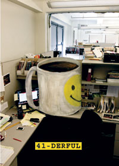
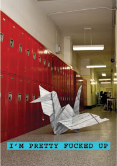
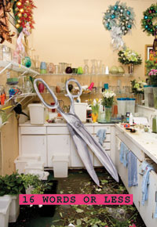

|
41-DERFUL
May 30 – June 8 @ 8pm | Opening night Monday, June 2nd | No performance June 3rd
written & directed by Jenny Schwartz
set by Arnulfo Maldonado
costumes by Tilly Grimes
lights by Matt Frey
sound by Brandon Wolcott
with Griffin Frey, Nathan Lee Graham, Annie McNamara and Paul Thureen
|
 |
|
I’M PRETTY FUCKED UP
June 13 – June 22 @ 8pm | Opening night Monday, June 16th | No performance June 17th
written by Ariel Stess
directed by Kip Fagan
set by Andromache Chalfant
costumes by Jessica Pabst
lights by Jeanette Oi-Suk Yew
sound by Daniel Kluger
with Lauren Annunziata, Seth Clayton, Alexander Flores, Ben Hollandsworth, Ana Nogueira, Bonnie White, Danny Wolohan and Colleen Werthmann
|
 |
|
16 WORDS OR LESS
June 26 – July 5 @ 8pm (July 4th @ 7pm) | Opening night Monday, June 29th | No performance June 30th
written by Peggy Stafford
directed by Portia Krieger
set by Daniel Zimmerman
costumes by Sydney Maresca
lights by Mike Inwood
sound by Stowe Nelson
with Crystal Finn, Donnetta Lavinia Gray, Neal Huff, Jessica Rothe, Clayton Dean Smith and more
|
 |